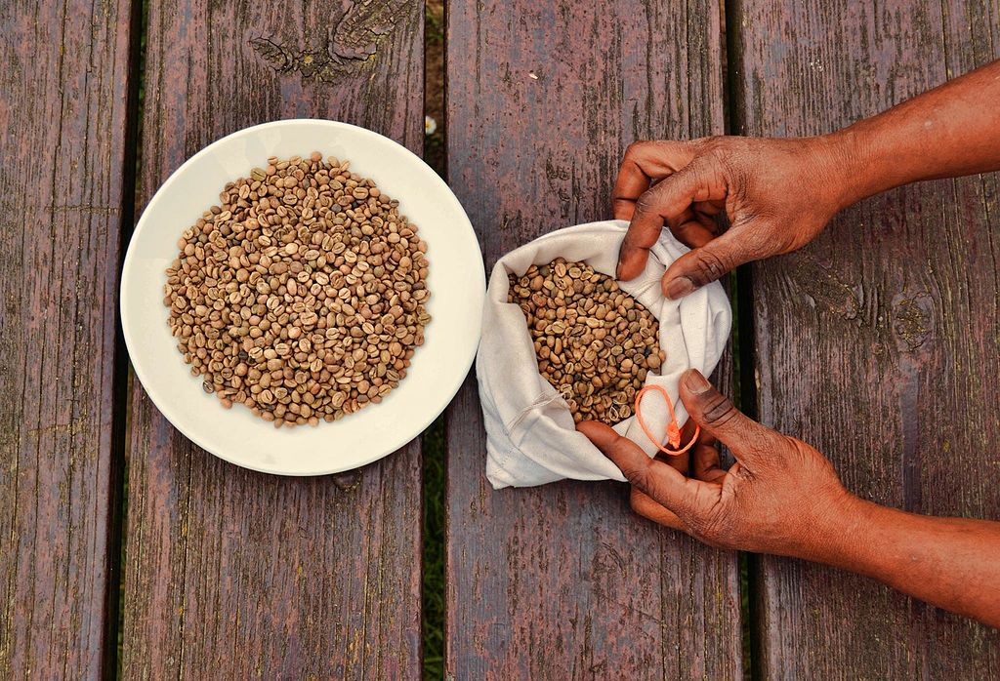
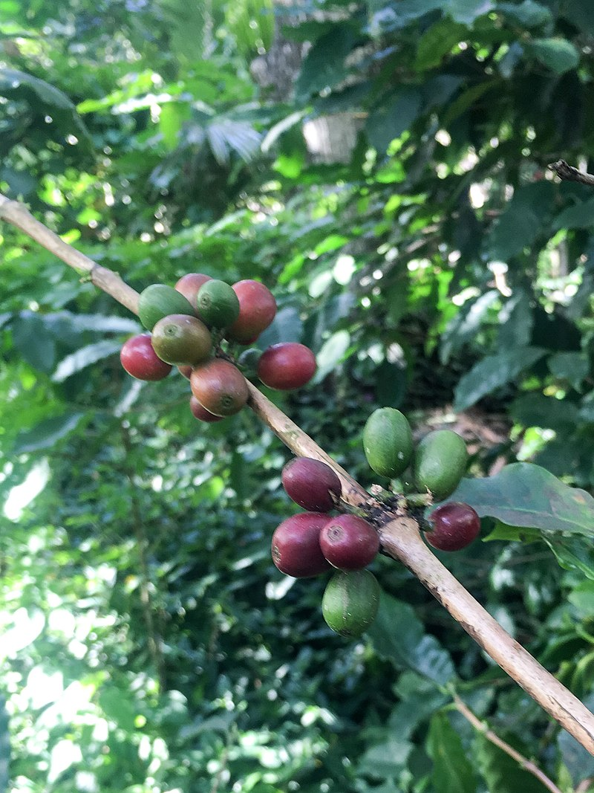
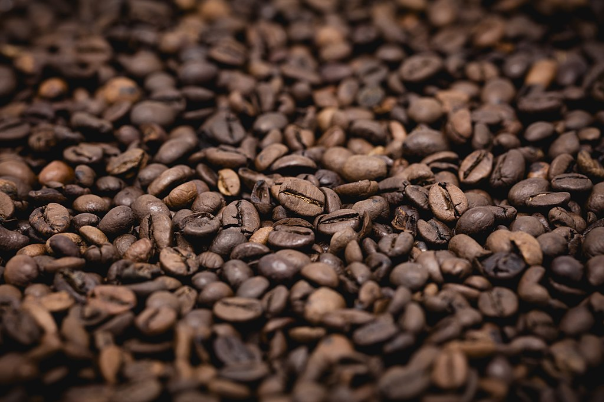

Etymology
"drink made from the ground and roasted seeds of a tree originally
native to Arabia and Abyssinia," c. 1600, from Dutch koffie, from
Turkish kahveh, from Arabic qahwah "coffee," which Arab etymologists
connected with a word meaning "wine," but it is perhaps rather from
the Kaffa region of Ethiopia, a home of the plant (coffee in Kaffa is
called būno, which itself was borrowed into Arabic as bunn "raw
coffee"). The early forms of the word in English indicate a derivation
from Arabic or Turkish: chaoua (1598), cahve, kahui, etc. French café,
German Kaffe are via Italian caffè. The first coffee-house in Mecca
dates to the 1510s; the beverage was in Turkey by the 1530s. It
appeared in Europe c. 1515-1519 and was introduced to England by 1650.
By 1675 the country had more than 3,000 coffee houses and coffee had
replaced beer as a breakfast drink, but its use there declined 18c.
with the introduction of cheaper tea. In the American colonies,
however, the tax on tea kept coffee popular. Meaning "a light meal at
which coffee is served" is from 1774. As a shade or color resembling
coffee, 1815. Coffee-bean is from 1680s. Coffee-mill is from 1690s;
coffee-spoon is from 1703; coffee-pot is from 1705; coffee-cup is from
1762. Coffee-shop is from 1838. Coffee-cake is from 1850 as "cake in
which coffee is an ingredient." Coffee break attested from 1952, at
first often in glossy magazine advertisements by the Pan-American
Coffee Bureau.
click here

Cultivation
The traditional method of planting coffee is to place 20 seeds in each
hole at the beginning of the rainy season. This method loses about 50%
of the seeds' potential, as about half fail to sprout. A more
effective process of growing coffee, used in Brazil, is to raise
seedlings in nurseries that are then planted outside at six to twelve
months. Coffee is often intercropped with food crops, such as corn,
beans, or rice during the first few years of cultivation as farmers
become familiar with its requirements.[46] Coffee plants grow within a
defined area between the tropics of Cancer and Capricorn, termed the
bean belt or coffee belt.[53] Of the two main species grown, arabica
coffee (from C. arabica) is generally more highly regarded than
robusta coffee (from C. canephora). Robusta coffee tends to be bitter
and have less flavor but better body than arabica. For these reasons,
about three-quarters of coffee cultivated worldwide is C. arabica.[43]
Robusta strains also contain about 40–50% more caffeine than
arabica.[54] Consequently, this species is used as an inexpensive
substitute for arabica in many commercial coffee blends. Good quality
robusta beans are used in traditional Italian espresso blends to
provide a full-bodied taste and a better foam head (known as crema).
click here

Roasting
The next step in the process is the roasting of the green coffee.
Coffee is usually sold in a roasted state, and with rare exceptions,
such as infusions from green coffee beans,[95] coffee is roasted
before it is consumed. It can be sold roasted by the supplier, or it
can be home roasted.[96] The roasting process influences the taste of
the beverage by changing the coffee bean both physically and
chemically. The bean decreases in weight as moisture is lost and
increases in volume, causing it to become less dense. The density of
the bean also influences the strength of the coffee and requirements
for packaging. The actual roasting begins when the temperature inside
the bean reaches approximately 200 °C (392 °F), though different
varieties of seeds differ in moisture and density and therefore roast
at different rates.[97] During roasting, caramelization occurs as
intense heat breaks down starches, changing them to simple sugars that
begin to brown, which alters the color of the bean.[98] Sucrose is
rapidly lost during the roasting process, and may disappear entirely
in darker roasts. During roasting, aromatic oils and acids weaken,
changing the flavor; at 205 °C (401 °F), other oils start to
develop.[97] One of these oils, caffeol, is created at about 200 °C
(392 °F), which is largely responsible for coffee's aroma and
flavor.[24] Roasting is the last step of processing the beans in their
intact state. During this last treatment, while still in the bean
state, more caffeine breaks down above 235 °C (455 °F). Dark roasting
is the utmost step in bean processing removing the most caffeine.
Although, dark roasting is not to be confused with the decaffeination
process. Grading roasted beans
click here